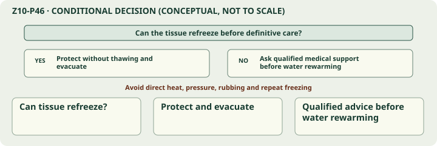

Z10-P46 · Wilderness medicine · Adapted historical material
Protect frostbitten tissue and obey the strict non-refreezing rule
Prevent catastrophic tissue loss by avoiding thaw-refreeze cycles and dry-heat burns during backcountry evacuation.
When it applies · Suspected frozen digits, feet, or facial tissue outside immediate hospital care.
Equipment · Dry bulky sterile gauze, clean padding between digits, loose warm dry insulation, and evacuation plan.

Actions
- Keep frozen tissue protected from crushing, friction, and impact—do NOT actively thaw frostbitten feet or hands in the field if ANY chance of refreezing exists before reaching definitive clinical care, because a thaw-refreeze cycle causes devastating tissue necrosis.[T04, M24]
- Never hold numb frostbitten tissue near campfires, stoves, car heaters, or exhaust pipes—loss of sensation allows severe deep thermal burns without pain warning.[M24, T04]
- If safe definitive shelter and rapid transport with ZERO refreezing risk exist, follow qualified clinical/WMS controlled warm-water rewarming protocols (clean circulating water ~98–102°F), cushion gently between digits with dry sterile gauze without popping blisters, and transport promptly.[M24, T04]
Failure recognition · Thawing frozen toes over a camp stove, then putting cold wet boots back on to hike out so the thawed tissue refreezes solid.[M24, T04]
Verify · Confirm zero refreezing risk before any thaw, zero dry-flame heat exposure, and clean padded digit separation for evacuation.[M24, T04]
Stop or change course · Frozen extremities require immediate evacuation to clinical care; walking on thawed, swollen, blistered feet risks massive tissue destruction.[M24, T04]
Evidence and editorial notes
- M24 · Wilderness Medical Society · Frostbite clinical practice guideline 2024 update (2024)
- Section: Frostbite Protection, Non-Refreezing Rule, and Evacuation · Conditions: Suspected frostbite in backcountry or winter emergencies
Support: Protect frozen tissue from mechanical trauma and friction, remove jewelry before swelling, never rub with snow or dry-heat near open flames, and only consider controlled warm-water rewarming when zero refreezing risk exists during evacuation.
Limitations: Refreezing thawed tissue causes catastrophic tissue loss; spontaneous thaw during evacuation still requires sterile padding and clinical care. · Conflicting evidence: Reconciles frozen B012 P24–P25 with 2024 WMS guidance.
Editorial note: Core clinical frostbite decision boundary in Z10. · Specialist reviewer: Wilderness medicine and frostbite specialist
Primary source · checked 2026-11-24 - T04 · Wilderness Medical Society · Frostbite clinical practice guideline 2024 update (2024)
- Section: Field treatment scenarios and Table 1 · Conditions: Suspected frostbite outside immediate medical care
Support: Avoid refreezing. Whether to actively thaw depends on ability to keep tissue thawed and evacuate. Detailed treatment requires clinical review.
Limitations: Field assessment cannot reliably determine final tissue depth. · Conflicting evidence: Supersedes outdated rubbing or snow-pack thawing myths.
Editorial note: Retained for cross-zone cold-injury stop boundaries. · Specialist reviewer: Wilderness medicine
Primary source · checked 2026-11-24
Source lineage · B012-P25 frostbite field limits and WMS 2024 Frostbite Guideline; adapted historical material · Classification · Adapted historical material.